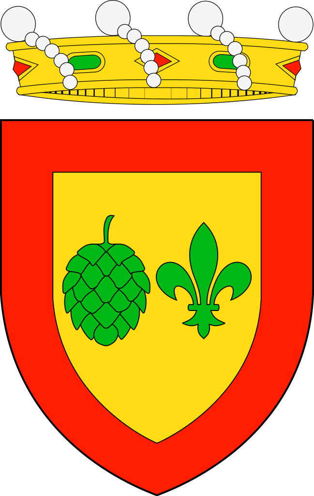
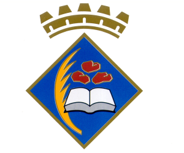
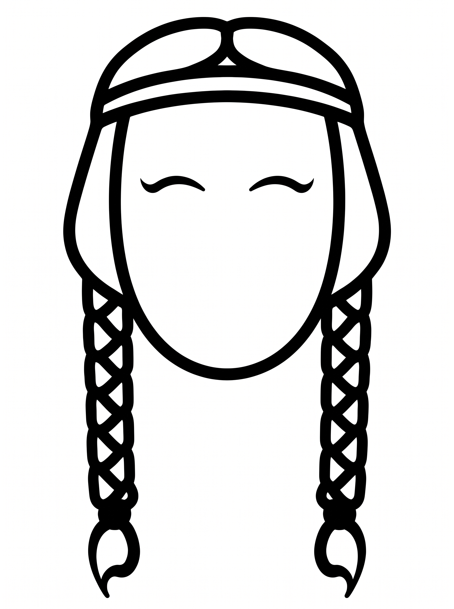
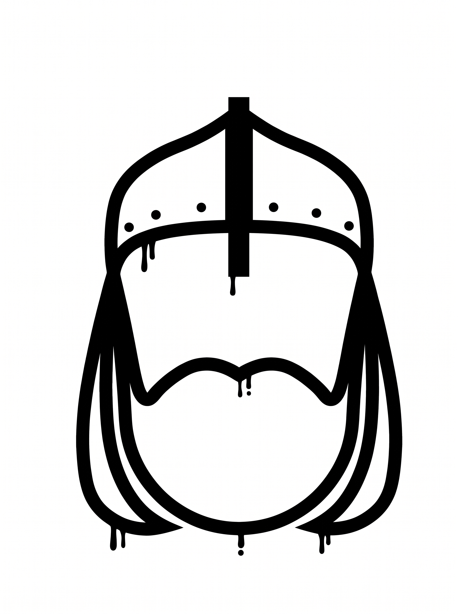

El Rescat de les 100 Donzelles
Uniendo la historia medieval de Bagà con las costas de Vila-seca a través del deporte y el compañerismo.

Bagà
Vila-seca
Uniendo la historia medieval de Bagà con las costas de Vila-seca a través del deporte y el compañerismo.

Bagà
Vila-seca
Hacia el año 1147, el noble Galcerán de Pinós marchó a combatir a Almería a petición del Conde de Barcelona, cayendo prisionero durante 5 años[cite: 3]. Para su liberación, los captores exigieron un cuantioso rescate en oro y, sobre todo, 100 doncellas que debían marchar desde Bagà para embarcar en el Port de Salou[cite: 3].
En el término de Vila-seca, la comitiva se encontró milagrosamente con Galcerán, liberado por la intercesión de Sant Esteve[cite: 3]. Desde el C.E. Mountain Trail Vila-seca, recreamos este camino histórico convirtiéndolo en un reto deportivo y cultural.